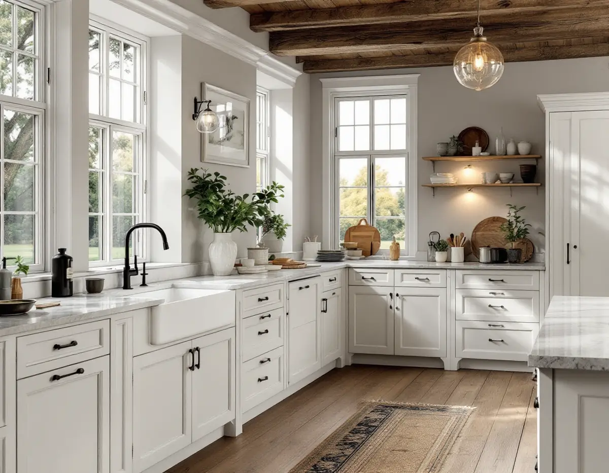
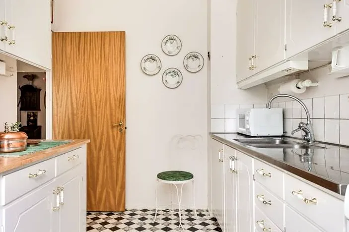

Besök i villan
Vi går igenom köket, ventilationen, avloppet och om en utbyggnad är aktuell.
Köksrenovering i Danderyd handlar ofta om stora villor från 1890–1930 i Djursholm och Stocksund, eller om egnahem i Enebyberg. Kommunen har några egna regler som är bra att känna till innan köket ritas, bland annat att en avfallskvarn inte får kopplas till avloppet. Vi tar hela köket, från rivning till montering, och samordnar el och VVS. Platsbesöket är gratis.

Djursholm grundades 1889 och beskrivs i kommunens översiktsplan som landets första villastad anlagd som förort. Bebyggelsen speglar framför allt 1890–1930, med stora villor på naturtomter. Stocksund växte fram parallellt, och sedan 1987 är både Djursholms och Stocksunds villastäder riksintressen för kulturmiljövården. Enebyberg har en annan karaktär, med bebyggelse från 1700-talet till 1970-talet och utpekade egnahemsområden.
För köket betyder det två saker. Inne i huset bestämmer du i stort sett själv, men allt som syns utåt – en utbyggnad, ett nytt fönster eller en fläkthuv – prövas hårdare här än i de flesta kommuner. Och i en villa som är över hundra år gammal behöver el, avlopp och ventilation ses över innan den nya inredningen planeras.

Danderyds kommun skriver att det inte är tillåtet att installera en avfallskvarn i köket om den är kopplad till ledningsnätet. Kommunen motiverar det med att både husets egna och de kommunala ledningarna inte är byggda för matavfall, att fettstopp och giftiga gaser ökar och att näringen i matavfallet går förlorad. Från 1 januari 2024 är sortering av matavfall med kvarn till ledningsnätet inte heller längre godkänd enligt regler som regeringen beslutade i december 2022.
En kvarn kopplad till en separat tank är däremot fortsatt ett godkänt system, men enligt kommunen kräver en sådan anläggning bygglov och samråd med kommunens avfallshämtare. För de flesta blir lösningen i stället ett genomtänkt sorteringsskåp under diskbänken, med plats för matavfall, förpackningar och restavfall.
Har köket en gammal kvarn kopplad till avloppet tar vi bort den i samband med rivningen och sätter ett vanligt vattenlås. Avloppet ses över samtidigt, eftersom det är där matrester och fett brukar ha satt sig.
Sedan 1 december 2025 krävs inget bygglov för en tillbyggnad av ett en- eller tvåbostadshus på sammanlagt högst 30 kvadratmeter, och kommunen påpekar att tidigare skärmtak och attefallstillbyggnader räknas in. Men Danderyd är tydligt: inom kulturhistoriskt värdefulla områden och riksintressen för kulturmiljövården gäller alltid lovplikt. Om fastigheten berörs syns i kommunens kulturmiljökarta.
Även en lovfri tillbyggnad kan kräva anmälan och startbesked, till exempel om husets konstruktion berörs, och ett nytt kök i tillbyggnaden innebär nästan alltid nya installationer för vatten, avlopp och ventilation. Kommunen påminner också om att den som ökar bruttoarean utan bygglov själv ansvarar för att informera kommunens VA-enhet.
För egnahemsområdet i Enebyberg anger kommunens riktlinjer att husens ursprungliga arkitektoniska uttryck ska bevaras och vara vägledande vid om- och tillbyggnad. En köksutbyggnad bör alltså underordna sig huset. Mer om att bygga till finns under tillbyggnad.
Många villor har fått nya ventilationssystem i efterhand. Enligt Danderyds kommun ska en- och tvåbostadshus med värmeåtervinning få en funktionskontroll när systemet installeras, men någon återkommande ventilationskontroll krävs inte. Ansluts köksfläkten till ett sådant system behöver den vara anpassad för det, annars rubbas balansen mellan från- och tilluft.
I hus med självdrag genom en murad skorsten är frågan i stället om kanalen räcker för köket. En installation eller väsentlig ändring av ventilationen kräver anmälan och startbesked. Vi tar reda på vilket system huset har innan fläkten väljs. Se också köksrenovering i Stockholm för planering av el, VVS och ventilation.
Vi går igenom köket, ventilationen, avloppet och om en utbyggnad är aktuell.
Vi kontrollerar om fastigheten ligger i ett riksintresse eller en värdekärna.
Du får ett skriftligt förslag där rivning, installationer och inredning står var för sig.
Behövs bygglov eller anmälan tas underlaget fram innan arbetet startar.
Gammal inredning och eventuell kvarn tas bort, rör och el dras och köket monteras.
Vitvaror och fläkt provas, och du får handlingar och skötselråd.
Rotavdraget är 30 procent av arbetskostnaden, högst 50 000 kronor per person och år och högst 75 000 kronor tillsammans med rut. Skatteverket räknar i småhus bland annat att montera fast köksinredning och installera vitvaror i samband med omfattande byggarbete, att modernisera el och byta vägguttag och att rengöra ventilation och imkanaler som rotarbete.
Material ger inget avdrag, och är huset yngre än fem år får arbetet bara återställa det ursprungliga skicket. Vi drar avdraget direkt på fakturan.
Storleken på köket och om det flyttas eller byggs ut avgör mest. En tillbyggnad med grund, stomme och tak är ett eget projekt, och i kulturmiljöerna tillkommer arbetet med bygglov. Ventilation, el och val av inredning styr resten. Du får ett skriftligt kostnadsförslag efter ett gratis platsbesök.
Planering, el, VVS, fläkt och väggar.
Köksrenovering i Stockholm →Takbyte, takbesiktning och plåtarbeten.
Takläggare i Danderyd →Djursholm, Stocksund och Enebyberg.
Takrenovering i Danderyd →Villastäder, lovplikt och strandskydd.
Attefallshus i Danderyd →Tillbyggnad, tomt och kommunens riktlinjer.
Byggföretag i Danderyd →Kalkfärg på puts, linoljefärg på trä.
Fasadmålning i Danderyd →Villastäder, egnahem och grupphus i Danderyd.
Fasadrenovering i Danderyd →Lovplikt, klassning och spröjs i Danderyd.
Fönsterbyte i Danderyd →Varsamt underhåll av villafönster i Djursholm.
Fönsterrenovering i Danderyd →Originalgolv i villor från 1890-talet och framåt.
Golvläggare i Danderyd →Slipa parkett och mönstergolv i villan.
Golvslipning i Danderyd →Rännor, stuprör och beslag i Danderyd.
Plåtslagare i Danderyd →Villastaden, takmaterial och solceller.
Takbyte i Danderyd →Tapet och papptak i äldre villor.
Tapetsering i Danderyd →Funkis, grupphus och 1950-talsvillor.
Tillbyggnad i Danderyd →Riva varsamt, bygga om helt.
Totalrenovering i Danderyd →